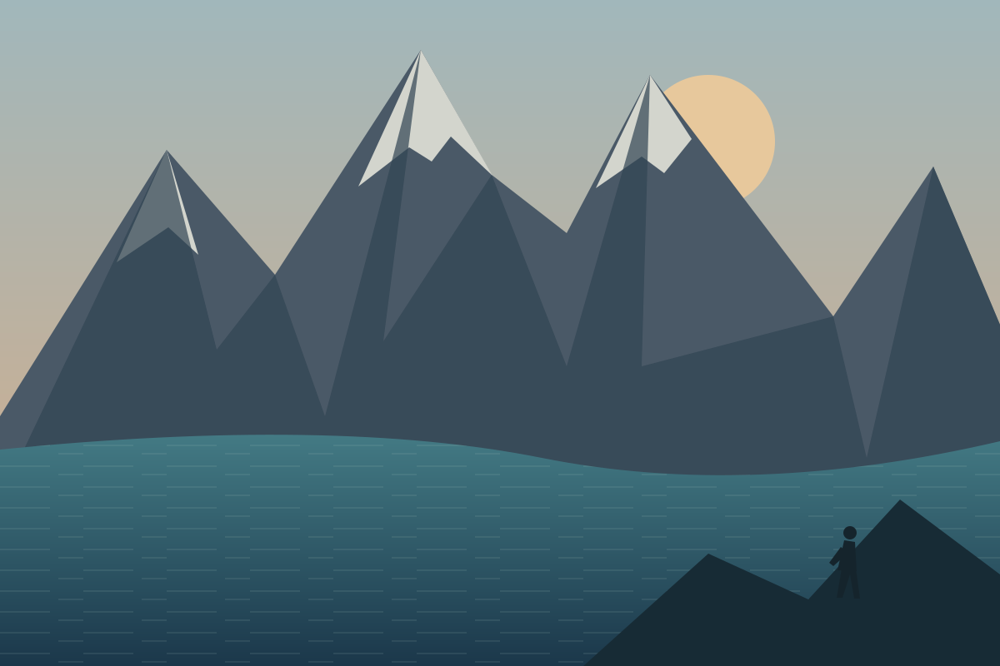

LUXURY TRAVEL · SINCE 2008
DISCOVER THE
WORLD ON
YOUR TERMS.
Bespoke itineraries, private guides, and handpicked stays for travellers who refuse the ordinary.
ORIGINAL LANDSCAPE ILLUSTRATION · PATAGONIA, IMAGINED
FAR FROM THE EVERYDAY
WHERE WE'LL
TAKE YOU.
Not a package. A possibility.
Six places to begin your own story.
6 destinations
No destinations match both filters. Try another season or reset your filters.
THE MERIDIAN DIFFERENCE
THE DETAILS MAKE
THE DIFFERENCE.
01BESPOKE ITINERARIES
Every trip custom-built around what moves you. Zero off-the-shelf packages.
↗02PRIVATE & SMALL-GROUP
No more than eight. A guide who knows the place, and the space to make it yours.
↗03HANDPICKED STAYS
Character over a checklist. Stays selected for a real connection to where you are.
↗Fictional brief statistics. *Illustrative rating, not a verified Trustpilot review.
CURIOSITY IS OUR COMPASS
WE'VE BEEN
WHERE YOU
WANT TO GO.
Founded in 2008, Meridian's story begins with a simple idea: the best travel feels personal. The agency in our brief researches every destination first-hand.
Local guides take you beyond the guidebook, and thoughtful planning leaves room for the unexpected. This concept shows how that conversation might begin.
ABTA membership and protection in the brief are unverified. This demonstration offers no financial protection, guarantees or actual travel services.

THE JOURNEYS THAT STAY WITH US
NOT ONE MOMENT
FELT LIKE TOURISM.
JAPAN“Meridian built us a three-week Japan itinerary that covered things we would never have found ourselves.”David & Clare H. · London
Fictional supplied testimonial
PATAGONIA“Space to slow down, and a landscape bigger than we could have imagined.”Example traveller story
Fictional illustrative copy
MOROCCO“Every turn opened a different door. The best days were the ones we hadn't expected.”Example traveller story
Fictional illustrative copy
YOUR NEXT CHAPTER
WHERE DO
YOU WANT
TO GO?
Tell us your dream trip in 60 seconds.
Build a local planning brief, with no obligation.
This is a fictional agency. Nothing is sent, booked or charged. Prices and live availability are not provided.